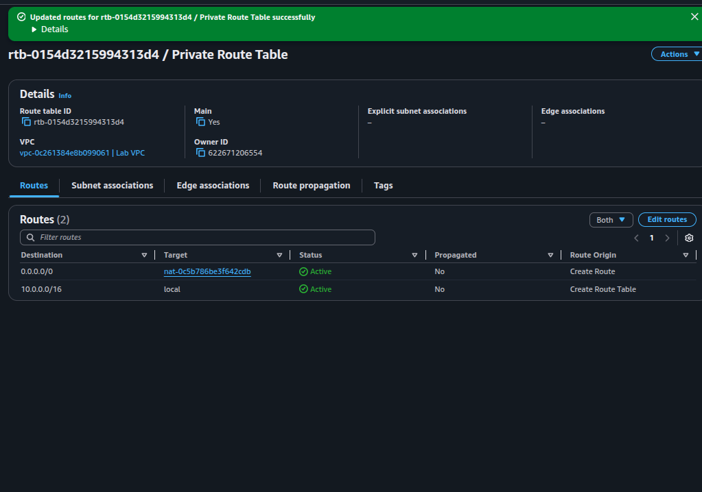
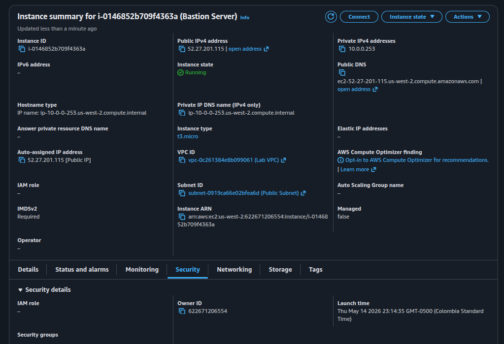

Public Side
Subnet 10.0.0.0/24 with auto-assigned public IPs. Its route table sends
0.0.0.0/0 to the Internet Gateway. The bastion server lives here
and is the only thing reachable from outside.
Built a Virtual Private Cloud from scratch with a public and private subnet, an Internet Gateway, a NAT Gateway, and a bastion server. The goal was to design a network where private instances can reach the internet for updates without being directly exposed, and where administrators connect to them through a controlled jump host.
A single VPC (10.0.0.0/16) was carved into two subnets with distinct roles. The public
side hosts the entry point — an internet-facing bastion. The private side hosts workloads that need
outbound internet without being reachable inbound. The plumbing in between is two route tables
and two gateways: an Internet Gateway for the public path, and a NAT Gateway for the private path's
one-way exit.
Subnet 10.0.0.0/24 with auto-assigned public IPs. Its route table sends
0.0.0.0/0 to the Internet Gateway. The bastion server lives here
and is the only thing reachable from outside.
Subnet 10.0.2.0/23 with no public IPs. Its route table sends 0.0.0.0/0
to the NAT Gateway, which lives in the public subnet. Outbound internet works;
inbound from the internet is impossible.
The full set of resources created in this lab. Note the deliberate CIDR sizing: the private subnet is twice the size of the public one because real workloads usually outnumber bastions and load balancers.
| Resource | Name / CIDR | Role |
|---|---|---|
| VPC | Lab VPC10.0.0.0/16 |
Root network. DNS hostnames enabled so EC2 instances get resolvable internal DNS names. |
| Public Subnet | Public Subnet10.0.0.0/24 (256 IPs) |
Hosts bastion + NAT Gateway. Auto-assign public IPv4 enabled. |
| Private Subnet | Private Subnet10.0.2.0/23 (512 IPs) |
Hosts workload instances. No public IPs. Twice the size of the public subnet. |
| Internet Gateway | Lab IGW |
Attached to the VPC. Provides bidirectional internet access for the public subnet. |
| NAT Gateway | Lab NAT gateway+ Elastic IP |
Lives in the public subnet. Provides outbound-only internet for the private subnet. |
| Public Route Table | Public Route Table |
Associated with the public subnet. Default route → IGW. |
| Private Route Table | Private Route Table |
Associated with the private subnet. Default route → NAT Gateway. |
| Bastion Server | Bastion Servert3.micro · Amazon Linux 2023 |
EC2 instance in the public subnet. SSH entry point for the entire VPC. |
A /23 gives 512 addresses vs /24's 256. In real deployments, the
private subnet usually holds far more compute (app servers, databases, queues) than the public
one (which only needs bastions, NAT, and load balancers). Sizing reflects that asymmetry.
An IGW only routes traffic for resources that actually have a public IP. Without auto-assign enabled (or a manually attached Elastic IP), instances launched in the subnet would be unreachable from the internet even with a correct route table.
The single most important difference between a "public" and a "private" subnet is the route table it's associated with. Same VPC, same kind of subnet — the route table is what changes the behavior.
Default route points to the Internet Gateway. Combined with instances having public IPs, this enables bidirectional internet traffic — inbound (SSH to bastion) and outbound (package downloads, etc).
Default route points to the NAT Gateway in the public subnet. The NAT Gateway then forwards traffic out through the IGW. Return traffic finds its way back via NAT state tables. No inbound paths from the internet exist.

0.0.0.0/0 targets the NAT Gateway
(nat-0c5b786be3f642cdb) and the route is Active. The
10.0.0.0/16 → local entry is created by the VPC automatically and routes
intra-VPC traffic.
local route in every VPC route table is implicit and
cannot be deleted. It guarantees that any two subnets inside the same VPC can talk to each other
regardless of public/private classification.
A bastion is the only instance with a public IP and inbound SSH from the internet. Every administrative connection to a private instance hops through it first — reducing the attack surface to a single hardenable host.
0.0.0.0/0
The private instance accepts SSH only from the VPC CIDR
10.0.0.0/16. This is the lock that makes the bastion mandatory — even if someone
learned the private IP, they couldn't reach it from the internet because the security group
rejects any source outside the VPC.

52.27.201.115, private IPv4 10.0.0.253, launched into
Lab VPC » Public Subnet.
Private instances often need to reach the internet — to pull OS updates, fetch container images, call third-party APIs. They must not be reachable from the internet. The NAT Gateway delivers exactly that asymmetry.
The NAT Gateway translates private source IPs to a single public IP visible on the internet. That public IP must be stable (so firewalls and allow-lists on remote services keep working), which is exactly what an Elastic IP provides — a static, account-owned public IPv4.
IGW: bidirectional, free, routes packets when source/destination has a public IP.
NAT GW: outbound-only (from the VPC's perspective), billed per hour + per GB,
translates private IPs to its EIP. NAT is built on top of an IGW — it always needs one.
The official guide ends with an optional challenge: launch a private EC2 instance, SSH into it through the bastion, and prove outbound internet works via the NAT Gateway. The base lab was completed; this section documents the reference commands for that challenge. Not executed in this run, so there is no visual evidence — only the procedure.
When launching the private instance, this user-data script enables password-based SSH so the
connection from the bastion can use a password (vockey isn't pre-installed there). In a real
environment you'd push the key with ssh-copy-id through the bastion instead.
#!/bin/bash
echo 'lab-password' | passwd ec2-user --stdin
sed -i 's|[#]*PasswordAuthentication no|PasswordAuthentication yes|g' /etc/ssh/sshd_config
systemctl restart sshd.service10.0.0.0/16 only.Once both instances are running, use EC2 Instance Connect (or SSH) to reach the bastion, then SSH from there into the private instance using its private IP. From inside, a ping to an internet host proves the NAT Gateway path is working.
# 1. Connect to the bastion (from EC2 console: "Connect" → EC2 Instance Connect)
# 2. From the bastion, jump to the private instance:
ssh ec2-user@10.0.2.X
# (use the password set by user-data: lab-password)
# 3. Verify outbound internet via NAT Gateway:
ping -c 3 amazon.com0.0.0.0/0 to the NAT Gateway, the NAT GW reached the IGW, and return packets made it back.This lab consolidated the previous networking series (labs 263, 264, 267) into a single real-world topology: a VPC where the public/private boundary is enforced by route tables and gateways, and where administrative access is funneled through a bastion.
The two recurring lessons are worth restating. First, routing is the contract:
a subnet is "public" if and only if its route table points 0.0.0.0/0 at an IGW.
Second, NAT is one-way by design: it grants the private subnet outbound
internet without ever creating an inbound path, which is exactly the asymmetry production
workloads need.